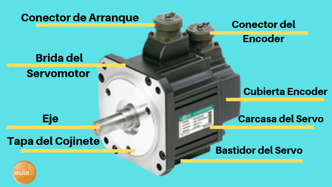

Un servomotor es un actuador rotativo o motor que permite un control preciso en términos de posición angular, aceleración y velocidad, capacidades que un motor normal no tiene. En definitiva, utiliza un motor normal y lo combina con un sensor para la retroalimentación de posición.
Los servomotores se controlan enviando un pulso
eléctrico de ancho variable, o modulación de
ancho de pulso (PWM), a través del cable de
control. Hay un pulso mínimo, un pulso máximo y
una frecuencia de repetición.
Un servomotor sólo puede girar 90°
en cualquier dirección para un movimiento total de 180°.)
El PWM enviado al motor determina la posición del eje, y se basa en la duración del pulso enviado a través del cable de control; el rotor girará a la posición deseada. El servomotor espera ver un pulso cada 20 milisegundos (ms) y la longitud del pulso determinará hasta dónde gira el motor. Por ejemplo, un pulso de 1.5ms hará que el motor gire a la posición de 90°. Si el tiempo es inferior a 1,5 ms, se mueve en sentido contrario a las agujas del reloj hacia la posición de 0°, y si el tiempo es superior a 1,5 ms, el servo girará en sentido de las agujas del reloj hacia la posición de 180°.
La cantidad máxima de fuerza que puede ejercer el servo se denomina par de torsión del servo. Sin embargo, los servos no mantendrán su posición para siempre; el pulso de posición debe repetirse para indicar al servo que se mantenga en posición.
Video de retroalimentaciónLos servos incluyen tres componentes principales:
* Un motor, un variador (también conocido como amplificador).
* Mecanismo de retroalimentación.
* Una fuente de alimentación.
* Servocontrolador capaz de controlar un solo eje o coordinar el movimiento de varios ejes.
La retroalimentación es proporcionada normalmente por un codificador o encoder ya sea interno o externo al motor o por un resolver. En aplicaciones que requieren un posicionamiento muy preciso, se pueden utilizar dos dispositivos de retroalimentación: uno en el motor para verificar el rendimiento del motor y otro en la carga para verificar la posición real de la carga.
Los servomotores se utilizan en aplicaciones que requieren variaciones rápidas de velocidad sin sobre calentar el motor como la robótica industrial, en la fabricación con sistemas de automatización y en aplicaciones de mecanizado de control numérico (CNC) por ordenador. A continuación te enumero algunas de las aplicaciones más comunes de los servos:
*En las industrias se utilizan en máquinas herramienta, embalaje, automatización de fábricas, manipulación de materiales, conversión de impresión, líneas de ensamblaje y muchas otras aplicaciones exigentes: robótica, maquinaria CNC o fabricación automatizada.
*También se utilizan en aviones radio-controlados para controlar la posición y el movimiento de los ascensores.
*Se utilizan en robots debido a su suave encendido y apagado y a su preciso posicionamiento.
*También se utilizan en la industria aeroespacial para mantener el fluido hidráulico en sus sistemas hidráulicos.
*Se utilizan en muchos juguetes controlados por radio.
| Comandos | Bits | Megas |
|---|---|---|
| Cisco | Nomenclatura | Nomenclatura 2 |